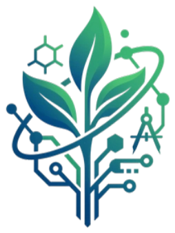

Computer Science
çalışan yazılım, algoritma veya veri aracı

Kadıköy BİLSEM görüşmesi · Ekim 2026
2026–2027 Program Modeli
10 haftada fikirden somut STEM ve sosyal bilimler projesine
Görüşme merkezli yapıdan, sonuç odaklı proje geliştirme modeline geçiyoruz.
Vizyon
Yalnızca STEM'e ilgi duyan öğrenciler değil;
Lise mentorları ile daha genç öğrenciler, Üsküdar Amerikan Lisesi çatısı altında bir arada:
Uzun vadede
Farklı okul ve kurumlardan öğrencilerin katıldığı; sürdürülebilir, ölçülebilir ve etkisi büyüyen bir gençlik ağı.
Üsküdar Amerikan Lisesi
Misyon
Genç öğrencileri, alanında ilgili lise mentorlarıyla buluşturuyoruz.
Yol boyunca takım çalışması · iletişim · sorumluluk · özgüven
Yalnızca öğrenmek değil: öğrendiğini kullanıp gerçek bir çıktı ortaya koymak.
Her hafta ölçülebilir bir teslimat, her aşamada mentor ve Chapter Head takibi.
Hafta 4, 7 ve 9'da projeye birer soru soruyoruz.
Problem ve yöntem yapılabilir mi?
Test edilebilir bir çıktı var mı?
Final sunumuna hazır mı?
Her alanın final ürünü kendi doğasına uygun ama somut olmalı.
çalışan yazılım, algoritma veya veri aracı
matematiksel model, simülasyon veya analiz
güvenli gözlem, deney veya biyolojik veri çalışması
güvenli deney, malzeme analizi veya ölçüm
prototip, tasarım veya sensör tabanlı çözüm
anket, saha araştırması, veri analizi veya politika önerisi
Garanti yapı. Altı Chapter'ın tamamı açılır. Başvuru sayısı düşük kalırsa Chapter kapatılmaz; hedefli öğrenci ve mentor yönlendirmesi yapılır.
Programın güvenilirliği süreç takibiyle gelecek.
Mentorlar yönlendirme, iletişim ve proje yönetimi eğitimi alır.
Her görüşme somut bir teslimat ve kısa ilerleme raporuyla biter.
Akademik ilerleme iki haftada bir kontrol edilir.
Projeler aynı kriterlerle değerlendirilir, geri bildirim verilir.
Merak, araştırma ve proje üretme kültürü bu modelle doğrudan örtüşüyor.
Kendi ilgisini gerçek bir probleme dönüştürür, proje geliştirme sürecini deneyimler.
BİLSEM öğrencilerine okul dışı, yapılandırılmış ve ölçülebilir bir STEM ve sosyal bilimler üretim alanı açılır.
Motivasyonu yüksek öğrencilerle daha güçlü ve sürdürülebilir proje çıktıları oluşur.
İş birliği önerisi
BİLSEM öğrencilerine başvuru çağrısının iletilmesi
Meraklı ve düzenli katılım gösterebilecek öğrencilerin teşvik edilmesi
Başvuru ve toplantı takviminin öğrenci programlarıyla çakışmaması
STEM & BUDS Türkiye
Ada Sarp Kırık · Türkiye Bölge Direktörü
STEM & BUDS Türkiye yönetim ekibi · Üsküdar Amerikan Lisesi